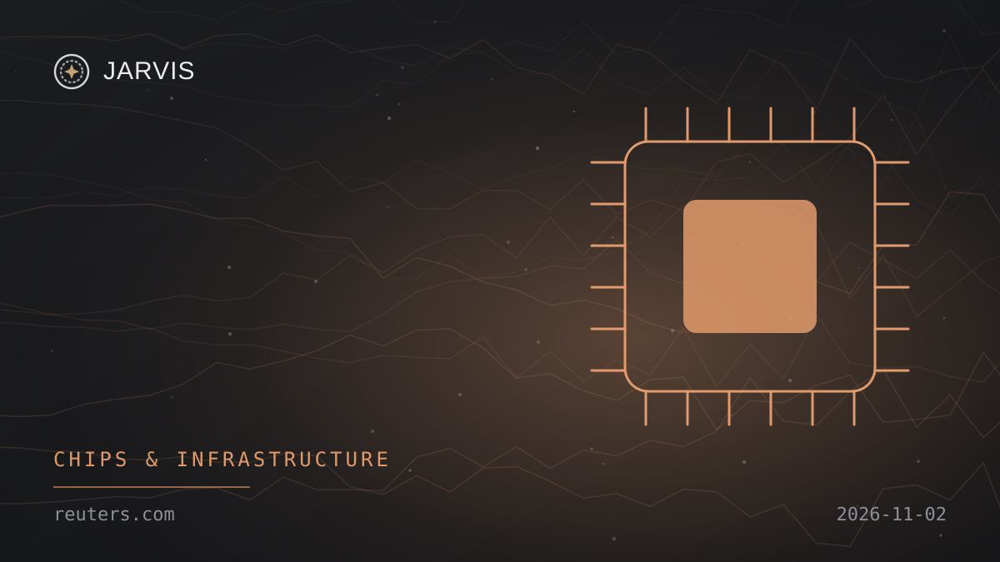
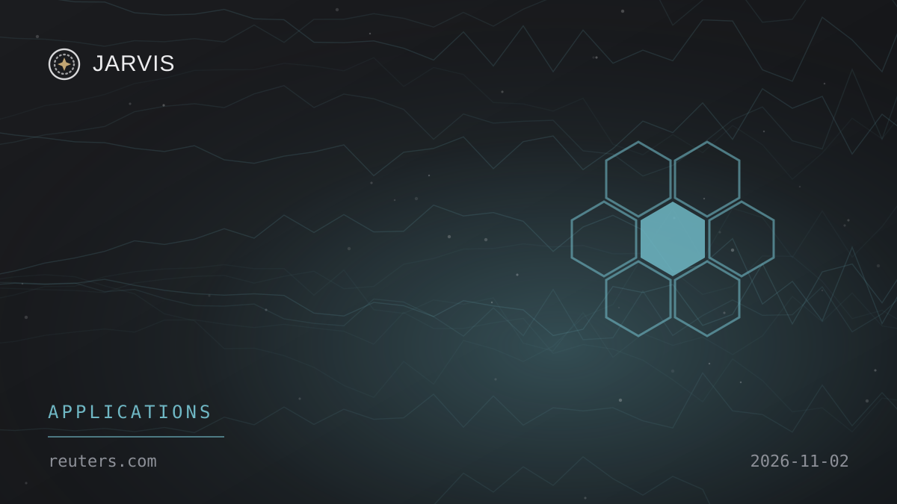
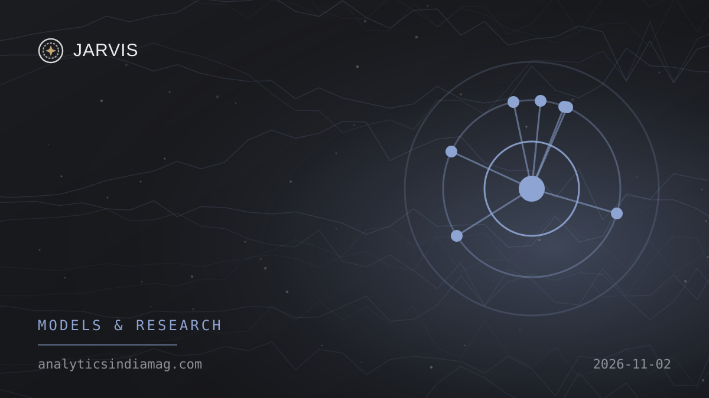

Monday, 2 November 2026
Nº 001Hello, Boss
Here’s your verified AI update for Monday, 2 November 2026.
Today’s brief1 Nov, 22:11 → 2 Nov, 22:11 Doha
5Stories
3Global
2India
Enable JavaScript to listen.
Explore Global
3 stories
Explore India
2 stories
Analytics India Magazine
NeuroDX reports early Sphota model results awaiting independent evaluation
None of today’s stories match your topics. Edit them in Profile.
Explore
No stories match. Try another word or source.
Saved
Tap the bookmark on any story to keep it here. Saved stories stay in this browser only.
Archive
Profile
Arunkumar Thamilarasu
Publisher · JARVIS AI NEWS
Hey Boss, it seems like you haven’t picked any topics yet.
App settings
NotificationsNews alerts on this device
Notification setup is being checked.
On iPhone or iPad, add JARVIS to your Home Screen, open it there, then enable notifications. Alerts are delivered by OneSignal after you opt in.
About